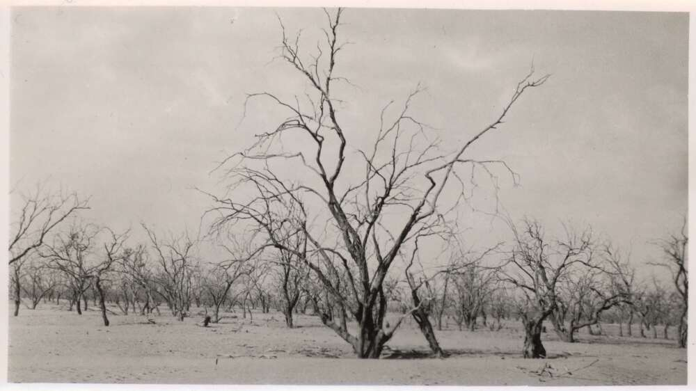
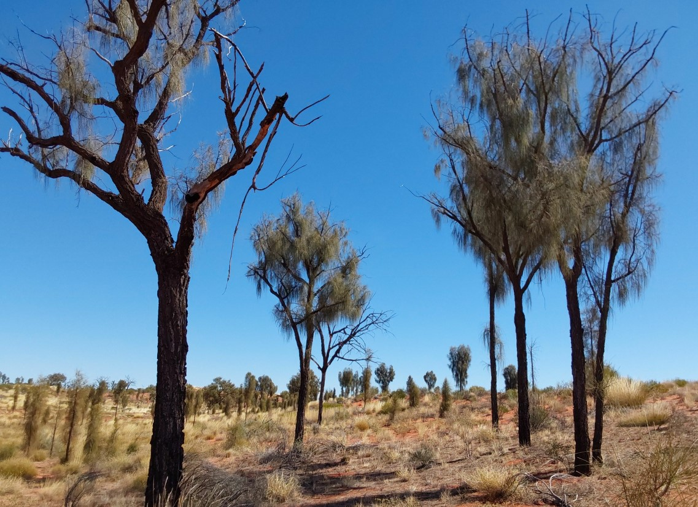
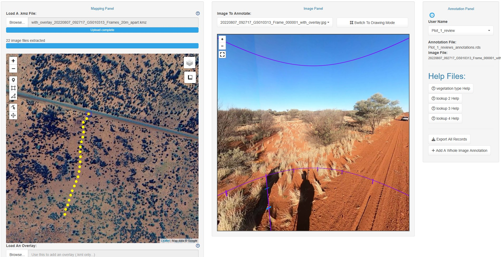
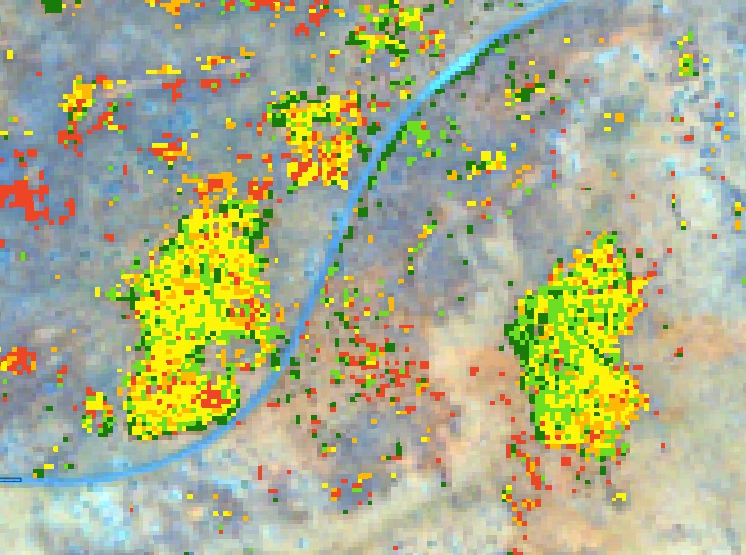

Mapping drought impacts in Central Australia
Using 360-degree cameras to map vegetation dieback at Uluru-Kata Tjuta National Park
Mapping drought dieback in Central Australia
Droughts have always played a crucial role in determining the structure and composition of vegetation across the Australian continent, either directly by causing mortality or dieback in water-stressed plants, or in conjunction with other drivers such as grazing, fire, or invasive species. Arid zone ecosystems are no exception: major episodes of drought-induced dieback of trees, shrubs and grasses have been seen across Central Australia from the earliest days of European settlement, with particularly notable events occurring during the 1895-1903 Federation Drought and the exceptionally dry periods of the 1920s-1930s and 1950s-60s. You can read about these in my book ‘Drought Country’ (CSIRO Publishing).

The most recent example occurred in 2017/18-2020 when much of eastern and central Australia was gripped by one of the most severe droughts on record. At Uluru-Kata Tjuta National Park, Northern Territory, virtually no rain fell in 2018, and by 2019 vegetation across the Park was showing signs of severe stress. By 2020 mortality of trees, shrubs and grasses had become widespread, affecting dominant species like desert oak (Allocasuarina decaisneana), mulga (Acacia aneura) and spinifex (Triodia spp.).

This is where my research partner, Nunzio Knerr, and I entered the story. While working of tree death in northern NSW in 2021, we heard from a colleague at Parks Australia, who manage Uluru Kata-Tjuta NP, about the scale of dieback that had occurred there, and developed a project there to document the spatial extent of vegetation mortality and to identify areas that were very sensitive to drought or which acted as refugial habitats for drought-sensitive species. The immediate problem was the sheer size of the study area - a massive 2,000 km2 - and the diversity of species, soil types and landforms that occurred there. To map such a large and varied landscape using spatial mapping techniques would require a very large number of plots, far more than we could could possibly collect in a week of field work time using traditional ecological survey techniques.

So, we decided to get creative. I had recently seen panoramic imagery on Youtube used to capture landscapes by hikers, and GoPro Max cameras seemed to produce images with sufficiently high resolution to easily see macroscopic features of vegetation and associated landscapes, and even the health of individual plants. So, we purchased two of the cameras, laid out an ambitious set of 30 transects - each 1 km to 4 km long - across the Park, and recorded video along each, all in just 3 days!
The next challenge was to figure out how to collect data on vegetation health across the Park, and to do this we (Nunzio led the coding) created a software package called Panospheric image annotator in R - ‘pannotator’ - which allowed us to visualise each image in panoramic mode, map them on satellite imagery, and annotate each with drop down menus containing categories for vegetation cover, size class, and health - all in a single GUI. This work has since been published in Methods in Ecology and Evolution, and the package launched on CRAN, where it is publicly available. We have also created a website for the package (pannotator website).

Over the next few months we used the pannotator package to annotate more than 5,000 images from the transect with data for >10 species, and exported the data. Crucially, each annotation contained extremely precise grid coordinates (lat/long) derived from the GPS of the GoPro Max, which allowed us to begin the more detailed process of mapping drought impacts across the study area based on these data points.

Over the next few months I will begin providing a series of posts on this research, and a tutorial on the process of going from data collection to vegetation map, so stay tuned!